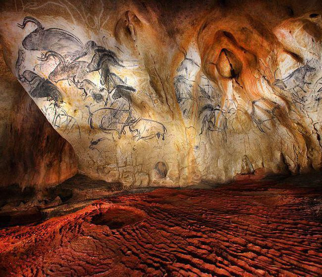

De grot Chauvet, in 1994 ontdekt in de kloven van de Ardèche, veranderde ons beeld van prehistorische kunst volledig. Ze bevat schilderingen en gravures van zo'n 36.000 jaar oud, gemaakt door de allereerste kunstenaars van de mensheid: paarden, leeuwen, neushoorns en vele andere dieren, met een opvallend realisme weergegeven. De kwetsbare originele grot is niet toegankelijk voor publiek, maar dankzij de replica, de Grotte Chauvet 2 - Ardèche, kan iedereen dit uitzonderlijke werk ontdekken, op ongeveer een uur rijden van Les Cabritas.

Een ontdekking die ons beeld van prehistorische kunst veranderde
De schilderingen in de grot Chauvet gelden nu als het oudste grote geheel van grotkunst ter wereld en staan op de UNESCO-werelderfgoedlijst. Hun verfijning en het gebruik van perspectief en beweging verrasten de onderzoekers en verschoven wat we dachten te weten over het begin van de menselijke kunst met enkele millennia.
De grootste replica van een beschilderde grot ter wereld
De Grotte Chauvet 2 - Ardèche opende in 2015 in een bebost park van 15 hectare en is uitgegroeid tot de meest bezochte culturele plek van het hele departement. De rondleiding door de replica wordt aangevuld met de Galerie de l'Aurignacien, gewijd aan de mensen en dieren van die tijd, en met de immersieve tentoonstelling 'Chauvet, het wetenschappelijke avontuur', die het nauwgezette werk van de onderzoekers in de originele grot laat zien. Tijdens schoolvakanties en in de weekenden van april tot oktober zijn er ook workshops en activiteiten, wat het tot een ideaal gezinsuitje maakt.
Goed om te weten voor uw bezoek
De rondleiding door de replica duurt ongeveer een uur en gebeurt in kleine groepen met een gids; online reserveren is in het hoogseizoen sterk aanbevolen. Het ticket geeft toegang tot de hele site: de replica van de grot, de Galerie de l'Aurignacien en de wetenschappelijke tentoonstelling, genoeg voor een goede halve dag. Omdat alles binnen en met airco is, is het een uitstekende optie bij twijfelachtig weer of tijdens zomerse hittegolven. Dankzij de nabijheid van de Pont d'Arc en Vallon-Pont-d'Arc kunt u beide bezoeken vanuit Les Cabritas makkelijk op één dag combineren.
Praktische informatie vanuit Les Cabritas
- Afstand vanaf Flaviac: ongeveer 1 uur rijden
- Afstand vanaf Saint-Alban-Auriolles: ongeveer 20 tot 25 min rijden
- Beste periode: het hele jaar, overdekte site
- Ideaal voor: cultuur, geschiedenis, gezinnen, regenachtige dagen
Zin om de Grotte Chauvet 2 - Ardèche te ontdekken vanuit uw vakantiehuis in de Ardèche?
Les Cabritas verwelkomt u in twee vakantiehuizen met privézwembad: in Flaviac, in het hart van de Ardèche, en in Saint-Alban-Auriolles, in het hart van de Zuid-Ardèche.